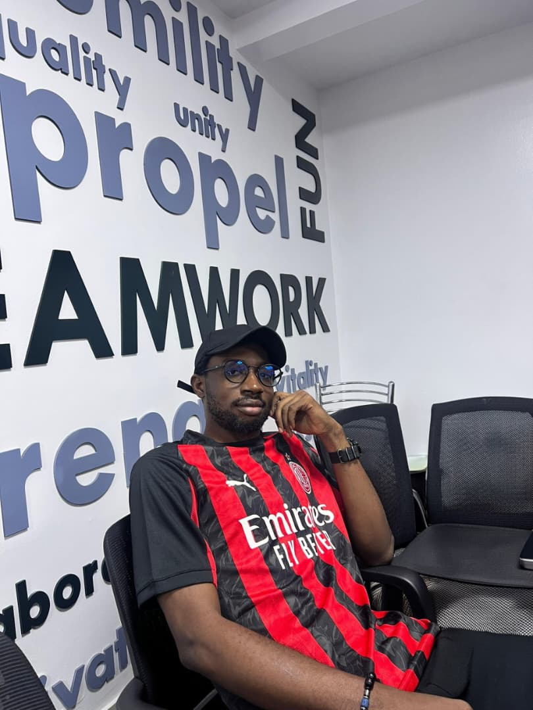

Passionate about Data Analytics, Artificial Intelligence, Retrieval-Augmented Generation (RAG), and Model Context Protocol (MCP). I enjoy transforming complex datasets into actionable insights and building intelligent solutions that enhance operational efficiency.
Contact Me
I am Henry-Williams Opara, a Data Analyst with a background in Biochemistry. I currently work as a Network & Systems Performance and Diesel Analyst, where I leverage data analytics to improve operational performance, fuel management, reporting, and decision-making.
My interests span Artificial Intelligence, AI Agents, Model Context Protocol (MCP), Retrieval-Augmented Generation (RAG), Business Intelligence, and Data-Driven Decision Making.
Excel, SQL, Power BI, Data Visualization, Reporting & Dashboard Development.
Python, HTML, CSS, Git & GitHub.
RAG Systems, MCP, AI Agents, Prompt Engineering.
Designed and developed a Leave Planning Application using Microsoft Power Apps to streamline leave requests, approvals, and workforce scheduling.
Built a Retrieval-Augmented Generation workflow for querying documents and extracting insights from enterprise knowledge bases.
Explored Model Context Protocol integration for AI-powered operational workflows and agent-based systems.
Email: henrywilliamsopara@gmail.com
LinkedIn: linkedin.com/in/henry-williams-opara-984235185
GitHub: github.com/sirvvy